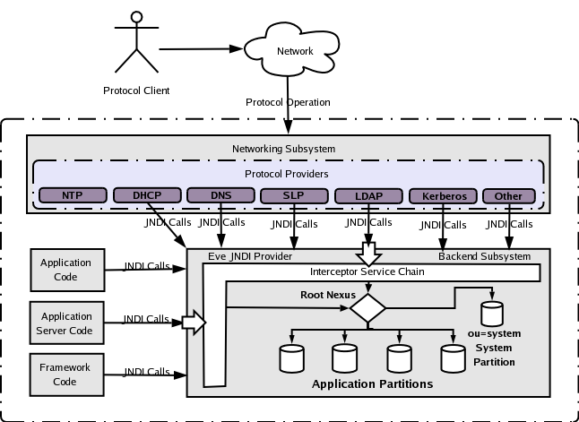

ApacheDS 2.0
Downloads
Documentation
- Basic User Guide
- Advanced User Guide
- Developer Guide
- Kerberos User Guide
- Configuration
- JavaDocs
- Cross-Reference
Support
Community
About Apache
1.1 - What Apache Directory Server is
This section describes what Apache Directory Server (abbreviated ApacheDS) is, and where it comes from.
System vision
ApacheDS 2.0 is an embeddable, extendable, standards compliant, modern LDAP server written entirely in Java, and available under the Apache Software License. Other network protocols like Kerberos and NTP are supported as well (and even more may be added), but basically (and especially for this introduction guide) ApacheDS is an LDAP server.
Embeddable means that it is possible to configure, start and stop ApacheDS from other Java components, especially application servers, and the server runs within the same VM. The solution has already been successfully embedded in Apache Geronimo, JBoss, and others. The fact that the server is embeddable is quite interesting, nevertheless you also have the deployment option to run the server standalone, for instance as a Windows service. Perhaps you know this situation from other LDAP servers – open source (like OpenLDAP) as well as commercial ones (like Sun Java System Directory Server). This guide is dedicated to people that are new to ApacheDS. The guide concentrates on installing, configuring and running ApacheDS in a standalone configuration.
Extendable means that the modern architecture of the solution provides many extension points. Write your own partitions to store directory data, interceptors to add functionality, etc. by implementing certain interfaces and plugging them in using Spring.
Standard compliant means that ApacheDS 2.0 adheres to all RFCs relevant to LDAPv3. Please note that version 1.0 of the server has been successfully certified by the Open Group in September 2006 (“LDAP certified”). Thus LDAP clients may rightly expect that ApacheDS behaves like they expect.
Modern means that ApacheDS aims modernize the LDAP territory, as well as it favors standards compliance. New rich integration tier constructs like LDAP Stored Procedures and Triggers are being built on top of existing standards.
Entirely written in Java means that the software compiles and runs on a huge number of hardware and software platforms. Native installers are available for Windows, MacOS and Solaris (both SPARC and intel platform), but in fact the set of possible targets is by far more extensive.
Architectural overview

Origin and Motives
Through his experiences with enterprise LDAP directories, Alex Karasulu, realized there is a great need for rich integration tier constructs like LDAP Stored Procedures, Triggers, and Views. In 2001 he set out to alter the OpenLDAP server to offer support for these useful facilities which are present in relational databases but missing in the LDAP world. Alex’s attempts failed due to the complexity of the software which was brittle, and difficult to manage. As C code ported to several platforms, the OpenLDAP code base, had several #IFDEF conditional pre-compiler directives that made it difficult to change the code. At this point Alex thought about implementing a new LDAP server in pure Java. Thanks to NIO this was finally possible using the 1.4 JDK.
In October 2002 Alex Karasulu founded and registered the LDAPd project at SourceForge.net. LDAPd was a a pure Java embeddable LDAP v3 protocol daemon built on the Avalon framework. Alex donated the code to the Apache Software Foundation and the code entered the Apache Incubator in October 2003. One year later in October of 2004, the Apache Directory Top Level Project (TLP) was formed after a successful incubation with the now called Apache Directory Server as its flagship product. After 4 years of development, in October 2006, Apache Directory Server 1.0 was released as an Open Group certified LDAPv3 protocol server. The certification has been renewed in September 2007.
Having a standards compliant and modern LDAP server, Apache Directory Team is now working on Identity and Access Management solutions leveraging the directory technology.
Resources
- Proposal for an Apache Directory Project the original proposal for incubation, September 2003.
- Architecting the Modern LDAP Renaissance: The Apache Directory Vision, Paper for 1st International Conference on LDAP, September 2007.